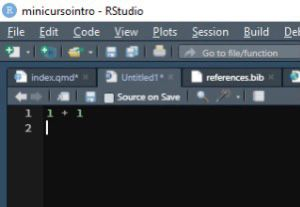
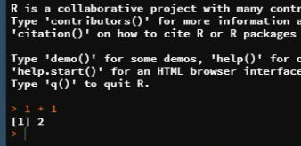

Introdução ao R

Como utilizar esse material
O material foi dividido em tópicos pensados para expor diversos campos da linguagem sem qualquer intenção de cobrir todas as lacunas, visto que isso não seria possível em uma tarde (nem em uma semana 😝)
Os retângulos em rosa claro abaixo estão representando linhas de códigos no R
aqui está o código que vai ser processado
1 + 1e aqui está a resposta
[1] 2Como seria no RStudio


R como calculadora
A calculadora do R respeita a matemática
Então isso
\[ {\frac {2 \cdot 2 - (2 + 2)}{2}= \text{0}} \]
é igual a isso
2 * 2 - (4 + 4) / 2[1] 0Objetos e seus nomes
O operador <- permite armazenar “coisas” dentro de objetos
# Armazenando 300 em ENCEJ
ENCEJ <- 300
ENCEJ[1] 300Classe dos Objetos
no R existem diferentes tipos de objetos e cada objeto possui as suas carecterísticas
x <- "Igor"
constat <- "30.000"
Constat <- "metas"x
constat
ConstatVetores
Os vetores são conjuntos indexados de valores. Tem SEMPRE esse formato:
nome_do_vetor <- c(1, 2, "Igor", "CJA")class(vetor)O nome desse comportamento é coerção, onde as classes mais fracas se subvertem as mais fortes
Significado de Indexado
O mesmo que: listado, ordenado, organizado.
Operações com vetores
CJA <- c(2, 6, 3, -5)
CJA + 1Reciclagem
Constat <- c(1, 2)
CJA + ConstatFunções
“é uma relação matemática estabelecida entre duas variáveis.”
“é uma regra que relaciona cada elemento de um conjunto a um único elemento de outro conjunto.”
Importação de dados 

Arquivos .CSV
Para importar esse tipo de dado precisaremos do pacote readr
Utilizaremos a função read_csv() para arquivos separados por vírgulas. Para arquivos separados por ponto-e-vírgula usaremos read_csv2()
Arquivos .XLSX ou .XLS
Utilizaremos a função read_excel() do pacote readxl
Arquivos .TXT
Para ler os arquivos .txt podemos usar a função read_delim()
Mas o que é um pacote?
Pacotes
Um pacote é como se fosse uma encomenda que você faz ao R de novas funções, é sobre extrapolar as margens e trabalhar em conjunto com a comunidade
Para instalarmos um pacote usamos a função
install.packages("nome_do_pacote")assim, o pacote está instalado em seu computador. Para conseguirmos utilizá-lo fazemos uso de
library(nome_do_pacote)Gráficos 

“ggplot2 é um sistema para criar gráficos declarativamente, baseado em The Grammar of Graphics . Você fornece os dados, informa ao ggplot2 como mapear variáveis para estética, quais primitivas gráficas usar e ele cuida dos detalhes.” - alguém no site do tidyverse
Para instalá-lo
install.packages("ggplot2")Para habilitá-lo
library("ggplot2")…porém lendo o site da Curso-R (aquele parceiro que a gente ama <3) eu conheci o esquisse.
Esquisse
Esse pacote foi criado com intuito de envelopar o ggplot2 e o transformar em algo super acessível.
O funcionamento do esquisse está explicado de forma detalhada aqui.
Relatórios e Apresentações 

R Markdown e Quarto, irmão mais velho e irmão mais novo, são fundamentais para quem pensa em criar documentos e apresentações reprodutíveis utilizando o R.
E é agora que eu mostro para vocês como este documento foi produzido
Materiais para Consulta
R for Data Sciente, do Hadley Wickham e Garrett Grolemund
Ciência de Dados em R, da Curso-R
Referências e Menções
O conteúdo disposto aqui foi totalmente produzido em RMarkdown (2021)
Os pacotes ggplot2 (2016), esquisse (2022); readxl (2019); e (readr 2021) foram pilares para a construção deste material.